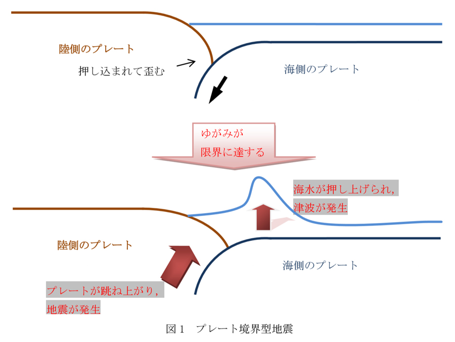

ここでは，地震を大きく分けて“プレート境界型地震”，“活断層型地震(直下型地震)”の2種類として解説します。
海溝やトラフ(※1)と呼ばれる場所では，海側のプレート(※2)が陸側のプレートの下に沈み込んでいます。 その時，海側のプレートは陸側のプレートを地底に押し込んでいきますが，そのゆがみが限界に達すると，陸側のプレートが跳ね上がり，巨大な地震が発生します(図1)。 この時，海水も急激に押し上げられるので，津波が発生します。
2011年3月11日に発生した東日本大震災はこちらのタイプに当てはまります。
|  |
|---|
※1：海底にある細長い盆地
※2：地球表面を覆っている，厚さ100kmほどの岩板
日本には，約2000の活断層 があると言われています。海側のプレートによる圧迫は，これら内陸部の活断層にも影響を及ぼします。 海側のプレートの圧迫によって内陸部の活断層がずれると，局地的な地震が発生します。
阪神・淡路大震災などがこちらのタイプに当てはまります。
プレート境界型地震には，規模(マグニチュード)が比較的大きい，被害の範囲が広い，予測が比較的簡単，大きな津波が発生するなどの特徴があります。
活断層型地震(直下型地震)には，規模が比較的小さい，被害が局地的(しかし、都市部で発生しやすいので，被害が大きい)，予測が難しい (震源が浅いため緊急地震速報が間に合わない可能性がある)，津波が発生しにくいなどの特徴があります。
以下の表は2種類の地震の特徴をまとめたものです。
| 規模（マグニチュード） | 予測 | 津波 | 震源 | |
|---|---|---|---|---|
| プレート境界型 | 大きい | 比較的簡単 | 発生する | 深い |
| 活断層型(直下型) | 小さい | 難しい | 発生しにくい | 浅い |